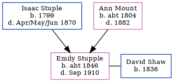

Emily Shaw (née Stupple) c1846 - 1910
[ Home ] | [ Calendar ] | [ Surnames Index ] | [ Errors ] | [ Family History ]The child of Isaac Stuple and Ann Mount, Emily Stupple, the three times great-aunt of Nigel Horne, was born in Herne Bay, Kent, England c. 18461,2,3,4,5,6. She was married to David Shaw.
During her life, she was living in Herne, Kent, England in 18511 and in 18612; and in Islington, London, England in 18713, in 18814 and in 18915 which is where she died in Sep 1910.
Parents
- Isaac was born in 1799
- Ann was born c. 1804
Citations
- 1851 England Census Online publication - Provo, UT, USA: The Generations Network, Inc., 2005.Original data - Census Returns of England and Wales, 1851. Kew, Surrey, England: The National Archives of the UK (TNA): Public Record Office (PRO), 1851. Data imaged from the National
- 1861 England Census Online publication - Provo, UT, USA: The Generations Network, Inc., 2005.Original data - Census Returns of England and Wales, 1861. Kew, Surrey, England: The National Archives of the UK (TNA): Public Record Office (PRO), 1861. Data imaged from the National
- 1871 England Census Online publication - Provo, UT, USA: The Generations Network, Inc., 2004.Original data - Census Returns of England and Wales, 1871. Kew, Surrey, England: The National Archives of the UK (TNA): Public Record Office (PRO), 1871. Data imaged from the National
- 1881 England Census Online publication - Provo, UT, USA: The Generations Network, Inc., 2004. 1881 British Isles Census Index provided by The Church of Jesus Christ of Latter-day Saints © Copyright 1999 Intellectual Reserve, Inc. All rights reserved. All use is subject to the
- 1891 England Census Online publication - Provo, UT, USA: The Generations Network, Inc., 2005.Original data - Census Returns of England and Wales, 1891. Kew, Surrey, England: The National Archives of the UK (TNA): Public Record Office (PRO), 1891. Data imaged from The National
- England & Wales, FreeBMD Birth Index, 1837-1915 Online publication - Provo, UT, USA: The Generations Network, Inc., 2006.Original data - General Register Office. England and Wales Civil Registration Indexes. London, England: General Register Office. © Crown copyright. Published by permission of the Cont
Family Tree
Map
Generated by ged2site. Last updated on Jul 3, 2024
Known Issues
Surname is different from both parents
Death date (Sep 1910) has no citations
May have been living with mother on 1851, but the addresses don't match or aren't detailed enough to be sure
May have been living with father on 1851, but the addresses don't match or aren't detailed enough to be sure
May have been living with mother on 1861, but the addresses don't match or aren't detailed enough to be sure
May have been living with father on 1861, but the addresses don't match or aren't detailed enough to be sure